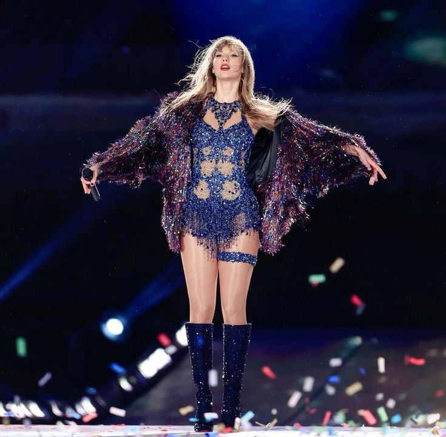

| Canciones | Duración |
|---|---|
| Lavender Haze | 3:22 minutos |
| Maroon | 3:38 minutos |
| Anti-Hero | 3:20 minutos |
| Snow On The Beach (feat. Lana Del Rey) | 4:16 minutos |
| You're On Your Own, Kid | 3:14 minutos |
| Midnight Rain | 2:54 minutos |
| Question...? | 3:30 minutos |
| Vigilante Shit | 2:44 minutos |
| Bejeweled | 3:14 minutos |
| Labyrinth | 4:07 minutos |
| Karma | 3:24 minutos |
| Sweet Nothing | 3:08 minutos |
| Mastermind | 3:11 minutos |
| The Great War | 4:00 minutos |
| Bigger Than The Whole Sky | 3:38 minutos |
| Paris | 3:16 minutos |
| High Infidelity | 3:51 minutos |
| Glitch | 2:28 minutos |
| Would've, Could've, Should've | 4:20 minutos |
| Dear Reader | 3:45 minutos |
| Hits Different | 3:54 minutos |
| Karma (feat. Ice Spice) | 3:21 minutos |
| You're Losing Me (From The Vault) | 4:37 minutos |
En 2022, Taylor Swift lanzó "Midnights". El álbum resume 13 noches de insomnio en su vida, profundizando en sus inseguridades. Sin embargo, también hay canciones empoderadas como "Karma" o "Bejeweled". Este álbum ganó el MTV Video Music Award al Álbum del Año. El 29 de noviembre de 2023, Taylor Swift lanzó "You're Losing Me (From The Vault)", una canción que forma parte del álbum "Midnights", como recompensa a las Swifties por convertirla en la mejor artista mundial en Spotify.
